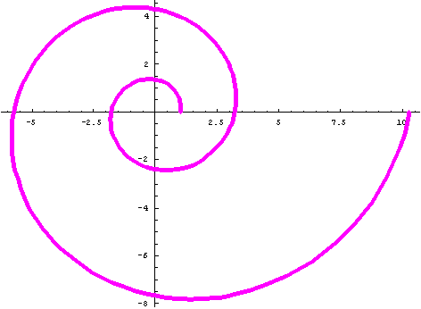
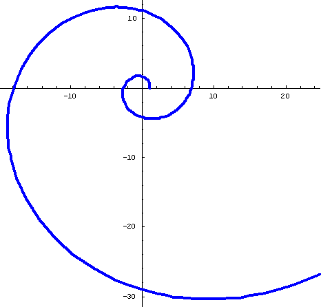
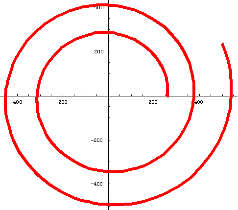

Comparing patterns in Equiangular Spirals for
#1 The Nautilus shell,
#2 The Fibonacci Numbers (the Golden Mean),
& #3. Equal Tempered Chromatic Music Scale
This work started with the study of the growth of the Nautilus shell by Don and his students on the rubbing of the shell below.
They took 4 measurements of the radius vectors to get 4 ratios OA/OB and averaged these growth ratios. Then they measured angle A in 4 places and averaged these. The results they obtained were confirmed in the book "The Language of Mathematics" by Frank Land.
On 9 September 2004, an old friend, Bud, emailed Don to ask if there was a relationship between the Fibonacci numbers and the Nautilus shell. Don didn't know this, but found the polar equation for the Fibonacci spiral in the book "Introduction to Geometry" by H.S.M. Coxeter.
Don also worked with a student finding geometric means. This led to the geometric sequence for the Equal Tempered Chromatic Music Scale where the constant ratio is 2^(1/12)=~1.059.. and led Don to the polar equation for its spiral.
The spirals below were rendered in Mathematica with Needs["Graphics`Graphics`"] and the PolarPlot commands.
#1 Nautilus shell
Polar Equation: r = Ex'Cot[79.5 'p/180];
Ratio of radius vectors every 360' is ~3.2;
Smaller angle between tangent to curve and radius vector is ~79.5'
PolarPlot[E^(x*Cot[79.5*Pi/180]),{x,0,4*Pi}, AspectRatio -> Automatic, PlotStyle
->{Thickness[.011],RGBColor[1,0,1]}];

#2 Fibonacci Spiral
Polar Equation: r=((1+Sqrt[5])/2)^(2*n/Pi); Note: The limit of the sequence of ratios of successive Fibonacci numbers is The Golden Mean = (1+Sqrt[5])/2.
Ratio of radius vectors every 360' is ~6.7;
Smaller angle between tangent to curve and radius vector is ~74'
PolarPlot[((1+Sqrt[5])/2)^(2*n/Pi),{n,0,4*Pi}, AspectRatio -> Automatic, PlotStyle ->{Thickness[.01],RGBColor[0,0,1]}];

#3. Equal Tempered Chromatic Music Scale:
Polar Equation: r =261.63*2^(n/12); Note: 261.63 Hertz is the frequency of middle C, and the constant ratio in the sequence is 2^(1/12)=~1.059...
Ratio of radius vectors every 360' is ~1.4;
Smaller angle between tangent to curve and radius vector is ~ 87.3'
PolarPlot[261.63*2^(n/12),{n,0,13}, AspectRatio -> Automatic, PlotStyle->
{Thickness[.013],RGBColor[1,0,0]}];

Notice, within each spiral, the growth rate for 360' is a constant and the angle is constant. Each is called an equiangular spiral or logarithmic spiral.
Try the measurements
on these spirals yourself. Please let Don know
what you find.
What questions can you think of about the
spirals? There is always more to learn!
To download
Don's materials
Mathman home
To chapter 6 and the
Nautilus spiral measurements
Back to
Patterns
in Mathematics
Back to
New
Discoveries